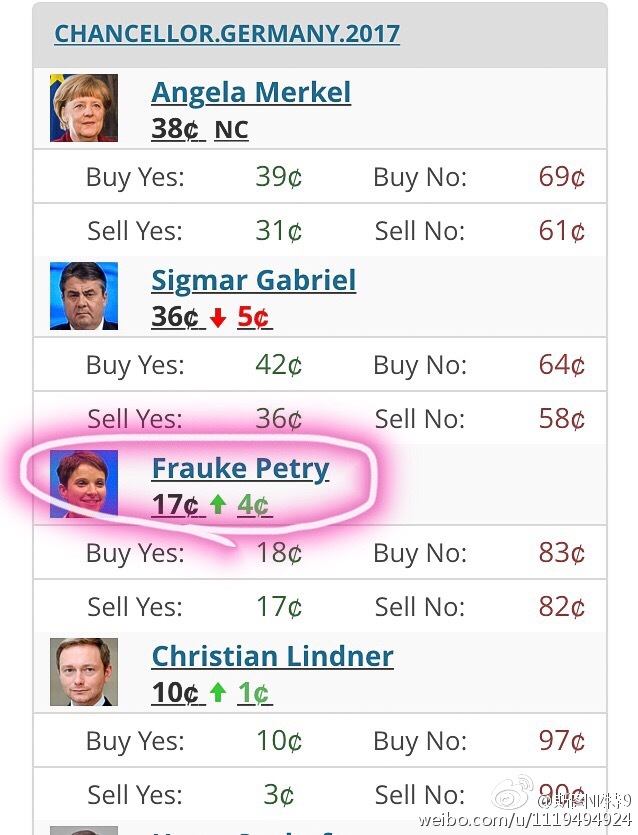

明年九月德国大选，排外主义政党AfD首领当选的赔率，相当于17%的机会。还有十个月时间，什么都有可能发生。德国是西方主流派最后的阵地了。如果英美法德全都是排外派赢得公投或者大选，世界可能真要变天了。当然之前还可能有意大利。意大利12月的公投预计会是现任总理大败，然后提前举行大选。又会是排外派上台吗？
现在回看，我几个月前这句评论里的比方真是个乌鸦嘴（或者吉利话，取决于你支持谁）…… //@斯图亚特9:回复@斯图亚特9:但拜仁和巴萨已经都淘汰了……//@斯图亚特9:回复@刘松braving:希拉里赢的赔率（8/15）比巴萨或拜仁的赔率（4/6）还要低一点。@斯图亚特9:现在特朗普当选美国总统的赔率和拜仁慕尼黑夺得今年欧冠的赔率一模一样，都是3/1。
这么厉害…… //@阿忆:俺经常通过一个人的声音错判这个人的长相 //@clueless：这个厉害了@微博综艺:#挑战不可能#【无敌是多么 多么寂寞】只通过听声音就可以判断一个人的长相？甚至被“听出”潜在的心理疾症。四川大学教授王英梅挑战#听音识人# 猛戳视频，一起见证#这不可能#的挑战~ 网页链接